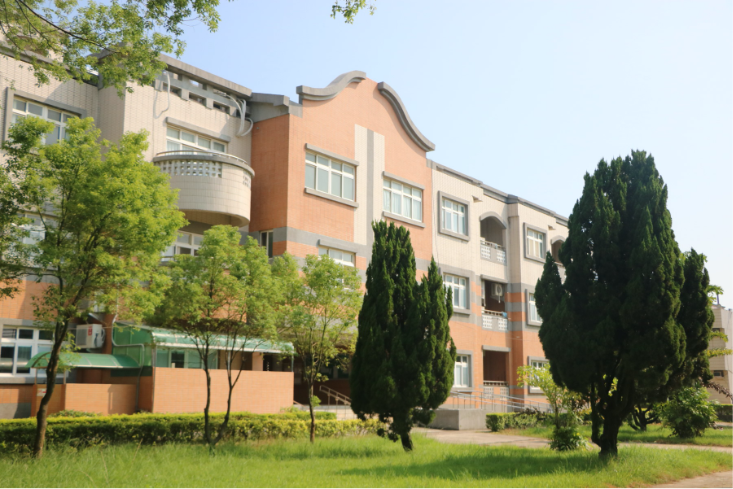
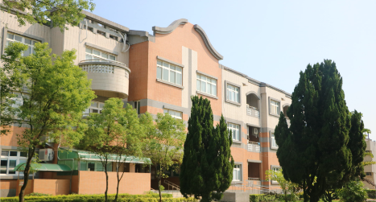

News
About
About
Team
President
International
中
｜
En
Liehyu News

Last news

Inaugural Innovation Fellow will help link the arts and entrepreneurship
As Innovation Fellow, Ye Qin Zhu ’20 M.F.A. will serve as the lead liaison between the Yale Schwarzman Center and the Tsai Center for Innovative Thinking...
2020 / 11 / 17
Inaugural Innovation Fellow will help link the arts and entrepreneurship
As Innovation Fellow, Ye Qin Zhu ’20 M.F.A. will serve as the lead liaison between the Yale Schwarzman Center and the Tsai Center for Innovative Thinking...
2020 / 11 / 17
1
2